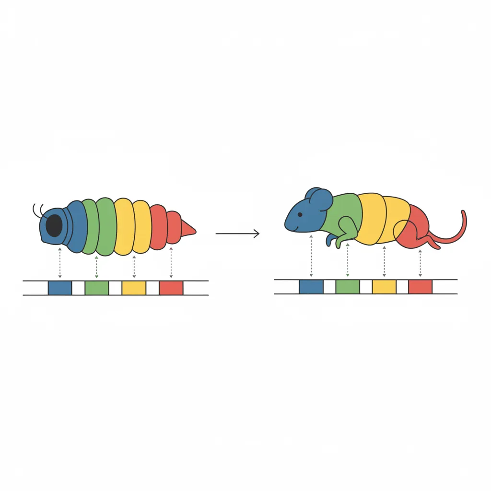
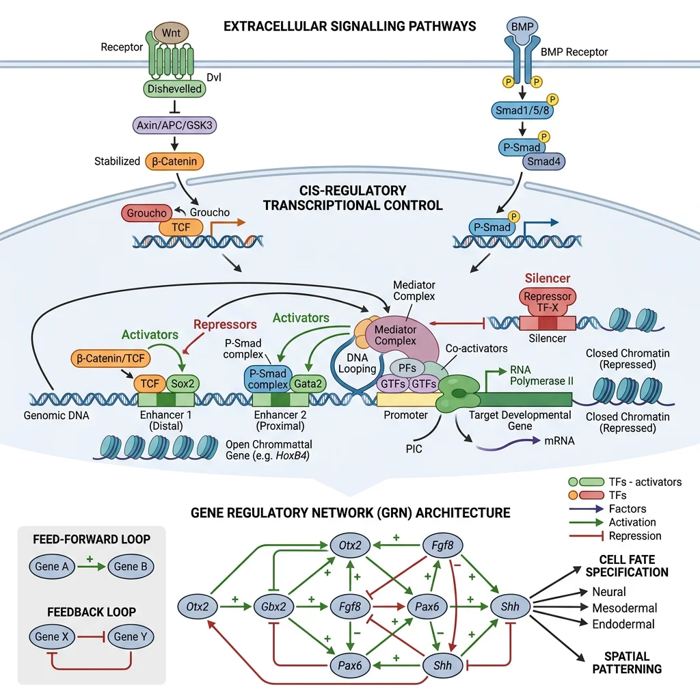
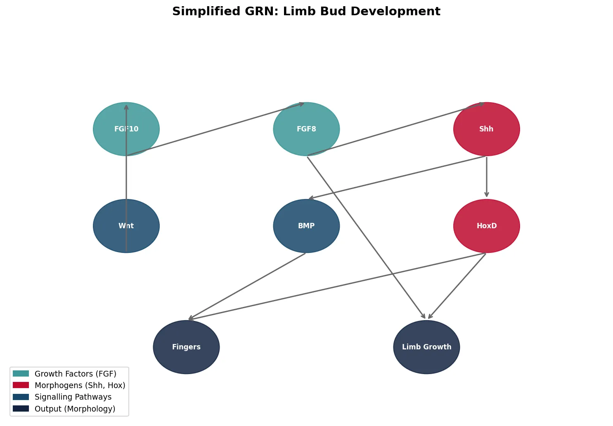
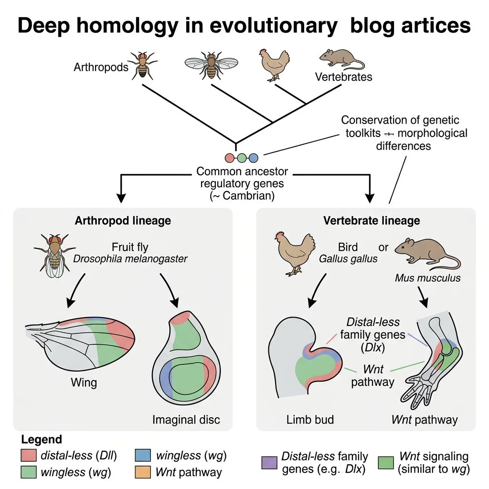
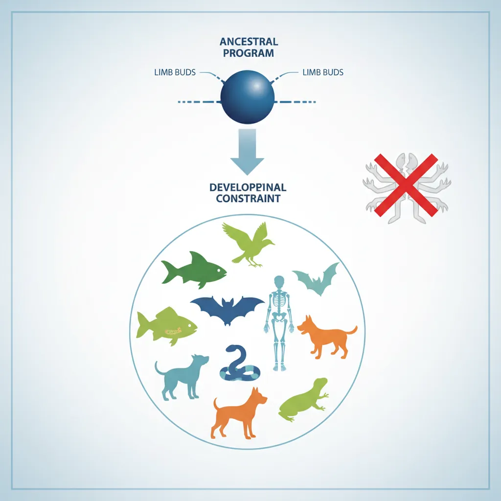
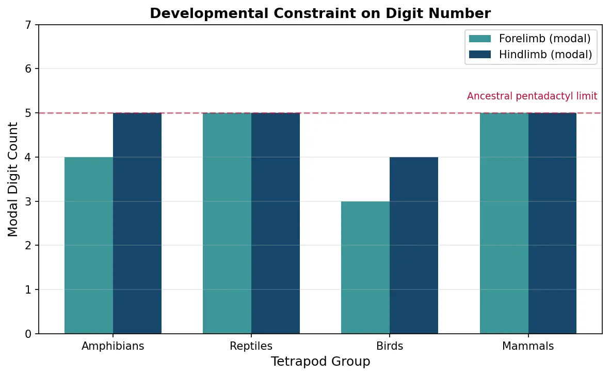
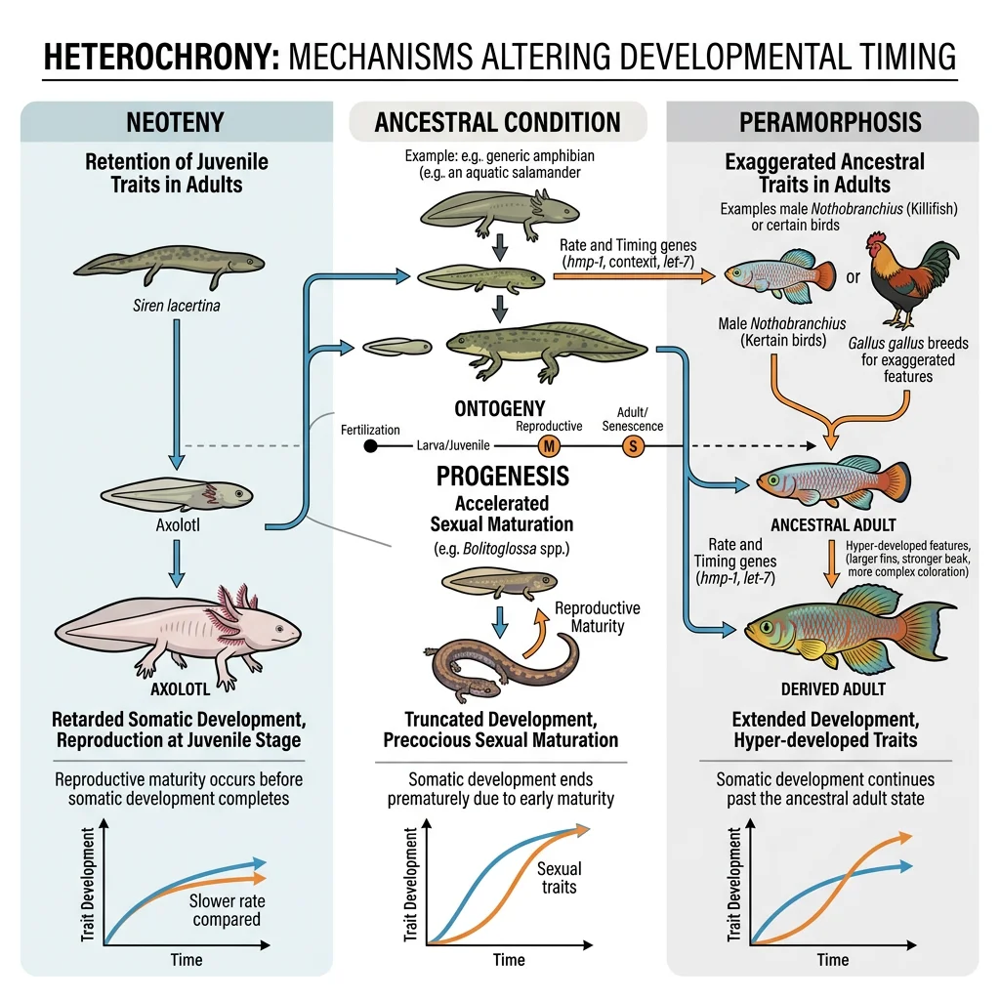
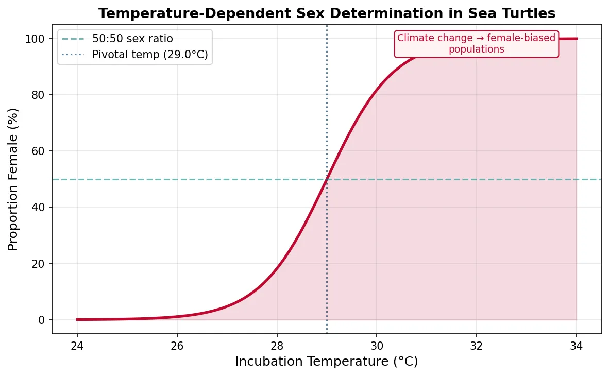

Evolutionary Biology Mastery
Darwin, Wallace & Natural Selection
Foundations, selection types, inclusive fitness, trade-offsGenetics of Evolution
DNA, population genetics, Hardy-Weinberg, molecular clocksSpeciation & Adaptive Radiation
Species concepts, reproductive isolation, rapid diversificationPhylogenetics & Taxonomy
Tree thinking, cladistics, molecular phylogenetics, classificationHuman Evolution & Migration
Hominin lineage, fossil evidence, Neanderthals, cultural evolutionCo-evolution & Symbiosis
Arms races, host-parasite, endosymbiosis, holobiontMass Extinctions & Biodiversity
Big Five extinctions, biodiversity patterns, conservationEvolutionary Developmental Biology
Hox genes, morphological innovation, heterochronyBehavioral & Social Evolution
Cooperation, game theory, sexual strategies, social insectsMathematical & Theoretical Evolution
Fitness landscapes, adaptive dynamics, ESS, selection modelsPaleontology & Fossil Interpretation
Radiometric dating, transitional fossils, taphonomyEvolutionary Genomics
Comparative genomics, gene duplication, HGT, epigeneticsFoundations of Evo-Devo
Evolutionary Developmental Biology (Evo-Devo) is the field that bridges two great biological disciplines: evolutionary biology (how species change over time) and developmental biology (how a single fertilised egg becomes a complex organism). Its central revelation is breathtaking: animals as different as flies, mice, and humans share a remarkably conserved genetic toolkit — the same master control genes that were present in their common ancestor over 500 million years ago.

Hox Genes & the Genetic Toolkit
Hox genes are the most famous members of the genetic toolkit. They are homeotic selector genes — master switches that specify the identity of body segments along the head-to-tail (anterior-posterior) axis. They were first discovered in Drosophila melanogaster (fruit fly), where mutations in Hox genes caused dramatic homeotic transformations: legs growing where antennae should be, or an extra pair of wings replacing halteres.
Discovery of Hox Genes and Genetic Control of Development
Ed Lewis's pioneering work on the Bithorax complex in Drosophila (1978) showed that Hox genes are arranged on the chromosome in the same order as the body segments they control — a property called collinearity. This was stunning: the gene at the "front" of the cluster controls the head, the next controls the thorax, and so on. Even more remarkably, this collinear arrangement is conserved from flies to humans. Mammals have 4 clusters of Hox genes (HoxA, HoxB, HoxC, HoxD) with 39 genes total — homologous to the fly's 8 Hox genes. These genes encode homeodomain transcription factors — proteins that bind DNA and activate or repress downstream target genes, determining cell fate.
Key toolkit genes beyond Hox:
| Toolkit Gene/Pathway | Function | Conservation |
|---|---|---|
| Pax6 | Master control gene for eye development | Flies to humans — mouse Pax6 can induce eyes in Drosophila |
| Sonic hedgehog (Shh) | Digit patterning, neural tube development | Insects to vertebrates |
| Wnt signalling | Axis formation, cell proliferation, stem cells | All bilaterian animals |
| BMP/TGF-β | Dorsal-ventral axis patterning | Arthropods to chordates (inverted axis) |
| Notch/Delta | Cell-cell signalling, somite segmentation | All metazoans |
Gene Regulatory Networks (GRNs)
Toolkit genes don't act alone — they operate within Gene Regulatory Networks (GRNs), complex circuits of transcription factors, signalling molecules, and cis-regulatory elements (enhancers, silencers, promoters) that control when and where genes are expressed. GRNs are the "wiring diagrams" of development.

import matplotlib.pyplot as plt
import matplotlib.patches as mpatches
# Simplified Gene Regulatory Network for limb development
fig, ax = plt.subplots(figsize=(10, 7))
ax.set_xlim(0, 10)
ax.set_ylim(0, 8)
ax.axis('off')
ax.set_title('Simplified GRN: Limb Bud Development', fontsize=14,
fontweight='bold', pad=20)
# Draw nodes (genes/signals)
nodes = {
'FGF10': (2, 6), 'FGF8': (5, 6), 'Shh': (8, 6),
'Wnt': (2, 4), 'BMP': (5, 4), 'HoxD': (8, 4),
'Fingers': (3, 1.5), 'Limb Growth': (7, 1.5)
}
colors_map = {'FGF10': '#3B9797', 'FGF8': '#3B9797', 'Shh': '#BF092F',
'Wnt': '#16476A', 'BMP': '#16476A', 'HoxD': '#BF092F',
'Fingers': '#132440', 'Limb Growth': '#132440'}
for name, (x, y) in nodes.items():
circle = plt.Circle((x, y), 0.55, color=colors_map[name], alpha=0.85)
ax.add_patch(circle)
ax.text(x, y, name, ha='center', va='center', fontsize=8,
color='white', fontweight='bold')
# Draw arrows (regulatory connections)
arrows = [
('FGF10', 'FGF8'), ('FGF8', 'Shh'), ('Shh', 'BMP'),
('Shh', 'HoxD'), ('Wnt', 'FGF10'), ('BMP', 'Fingers'),
('HoxD', 'Fingers'), ('FGF8', 'Limb Growth'), ('HoxD', 'Limb Growth')
]
for src, tgt in arrows:
sx, sy = nodes[src]
tx, ty = nodes[tgt]
ax.annotate('', xy=(tx, ty+0.55 if ty > sy else ty+0.55),
xytext=(sx, sy-0.55 if sy > ty else sy-0.55),
arrowprops=dict(arrowstyle='->', color='#666', lw=1.5))
legend_elements = [
mpatches.Patch(color='#3B9797', label='Growth Factors (FGF)'),
mpatches.Patch(color='#BF092F', label='Morphogens (Shh, Hox)'),
mpatches.Patch(color='#16476A', label='Signalling Pathways'),
mpatches.Patch(color='#132440', label='Output (Morphology)')
]
ax.legend(handles=legend_elements, loc='lower left', fontsize=9)
plt.tight_layout()
plt.show()

Modularity in Development
Modularity is the principle that complex organisms are built from semi-independent units — modules — that can evolve independently without disrupting the whole. In development, modules include individual body segments, limbs, organs, and even sub-components like individual teeth or feathers.
- Developmental modules — each limb bud is a module; a mutation affecting the forelimb doesn't necessarily change the hindlimb
- Evolutionary consequence — modularity enables "mix and match" evolution. Bat wings evolved by modifying the forelimb module (elongating digits) without changing the hindlimb
- Serial homology — repeated structures (vertebrae, ribs, insect segments) are serial modules. Hox genes can give each module a distinct identity while sharing the same basic developmental programme
Morphological Innovation
How do entirely new body structures — wings, eyes, jaws, flowers — evolve? Evo-Devo reveals that most "novelties" arise not from new genes, but from redeployment of existing toolkit genes in new developmental contexts. Evolution is a tinkerer, not an engineer.

Body Plan Evolution — The Cambrian Explosion
The Cambrian Explosion (~540–520 Mya) saw the rapid appearance of nearly all major animal body plans (phyla) within ~20 million years. Evo-Devo provides a framework for understanding this burst: the toolkit genes were already in place in pre-Cambrian ancestors, but the evolution of new regulatory connections between them enabled novel body architectures.
Deep Homology — Ancient Genes, New Structures
Neil Shubin, Cliff Tabin, and Sean Carroll introduced the concept of deep homology: structures that appear very different (insect wings, vertebrate limbs) are built by the same underlying toolkit genes deployed in similar developmental programmes. The Distal-less gene, for example, patterns the tips of appendages in insects, crustaceans, and vertebrates alike — even though these appendages evolved independently. This means animal appendages share an ancient developmental "subroutine" inherited from a common ancestor, even when the adult structures look nothing alike. Deep homology explains why evolution can generate similar solutions repeatedly (convergent evolution at the molecular level).
Novel Structures — Co-option and Exaptation
True evolutionary novelties rarely arise de novo. Instead, they emerge through co-option (or exaptation) — repurposing existing structures and gene networks for new functions:
| Novel Structure | Ancestral Structure | Developmental Mechanism |
|---|---|---|
| Feathers (birds) | Reptilian scales | Modified Shh/BMP signalling in skin follicles; initially for insulation, then flight |
| Turtle shell | Ribs + dermal bone | Wnt signalling redirecting rib growth outward into a fused carapace |
| Insect wings | Gill-like structures (crustacean ancestor) | Co-option of appendage patterning genes (apterous, vestigial) in thoracic segments |
| Middle ear bones (mammals) | Jaw bones (articular, quadrate) | Gradual reduction of jaw bones and incorporation into auditory system during synapsid evolution |
| Butterfly eyespots | Wound healing gene network | Co-option of Distal-less and hedgehog signalling into wing colour patterning |
Developmental Constraints
Developmental constraints are biases in the range of phenotypic variation that development can produce. They explain why certain body plans are common and others are impossibly rare — not because natural selection forbids them, but because the underlying developmental programme cannot generate them.

- Physical constraint — diffusion limits cell size; gravity limits body mass on land; the laws of physics constrain wing shape for flight
- Phylogenetic constraint — vertebrates always have a maximum of 4 limbs because their common ancestor's developmental programme specified 4 limb buds. No vertebrate has evolved 6 legs
- Developmental channelling — digit number in tetrapods is constrained by the Shh signalling gradient. Most tetrapods have 5 or fewer digits; polydactyly (more digits) is rare because it requires bypassing conserved GRN wiring
import numpy as np
import matplotlib.pyplot as plt
# Digit number distribution across tetrapod orders
groups = ['Amphibians', 'Reptiles', 'Birds', 'Mammals']
digit_fore = [4, 5, 3, 5] # Modal forelimb digit count
digit_hind = [5, 5, 4, 5] # Modal hindlimb digit count
fig, ax = plt.subplots(figsize=(8, 5))
x = np.arange(len(groups))
width = 0.35
bars1 = ax.bar(x - width/2, digit_fore, width, label='Forelimb (modal)',
color='#3B9797')
bars2 = ax.bar(x + width/2, digit_hind, width, label='Hindlimb (modal)',
color='#16476A')
ax.set_ylabel('Modal Digit Count', fontsize=12)
ax.set_xlabel('Tetrapod Group', fontsize=12)
ax.set_title('Developmental Constraint on Digit Number',
fontsize=13, fontweight='bold')
ax.set_xticks(x)
ax.set_xticklabels(groups)
ax.set_ylim(0, 7)
ax.legend()
ax.grid(axis='y', alpha=0.3)
# Annotate constraint
ax.axhline(y=5, color='#BF092F', linestyle='--', alpha=0.5)
ax.text(3.5, 5.3, 'Ancestral pentadactyl limit', fontsize=9,
color='#BF092F', ha='right')
plt.tight_layout()
plt.show()

Heterochrony & Plasticity
Some of the most profound evolutionary changes involve not what develops, but when it develops and how flexibly organisms respond to their environment. Heterochrony and phenotypic plasticity are two powerful mechanisms that generate morphological diversity without requiring new genes.

Changes in Developmental Timing — Heterochrony
Heterochrony is evolutionary change in the timing or rate of developmental events. Small shifts in when a process starts, stops, or speeds up can produce dramatic differences in adult form.
| Type | Change | Result | Example |
|---|---|---|---|
| Paedomorphosis (Neoteny) | Somatic development slowed; sexual maturity at ancestral time | Adult retains juvenile features | Axolotl retains gills and aquatic larval form throughout life |
| Progenesis | Sexual maturity accelerated; somatic development stops early | Miniaturisation, juvenile body | Many miniaturised frogs and salamanders |
| Peramorphosis | Development extended beyond ancestral endpoint | Exaggerated adult features | Irish elk antlers — continued growth produced enormous racks |
| Acceleration | Rate of development increased | Larger or more elaborate structures | Larger brains in hominins (faster cortical growth relative to body) |
Human Neoteny — Are We Juvenile Apes?
Stephen Jay Gould argued that humans exhibit neoteny relative to other great apes. Adult humans retain many features that are juvenile in chimpanzees: flat face, large brain-to-body ratio, thin body hair, and a prolonged period of dependency and learning. Our skull shape closely resembles that of a juvenile chimpanzee, not an adult. This "retardation" of somatic development relative to reproductive maturity may have been critical for the evolution of human intelligence — our extended childhood provides years of neural plasticity for learning language, tool use, and social skills that no other species matches.
Phenotypic Plasticity
Phenotypic plasticity is the ability of a single genotype to produce different phenotypes in response to environmental conditions. Rather than being "hard-wired," development is conditionally responsive — the same DNA can build different bodies depending on temperature, nutrition, predator presence, or social environment.
- Polyphenism — discrete alternative phenotypes from one genotype. Caterpillars of Nemoria arizonaria look like oak catkins in spring (matching catkin-rich diet cues) but like twigs in summer
- Reaction norms — the continuous range of phenotypes a genotype can produce across an environmental gradient (e.g., plant height varies with water availability)
- Developmental plasticity — Daphnia (water fleas) grow protective spines and helmets only when they detect chemical cues from predators (fish kairomones)
Environmental Influence on Development
Environmental factors can directly alter developmental trajectories through several mechanisms:
- Temperature-dependent sex determination (TSD) — in many reptiles (turtles, crocodilians), the incubation temperature of eggs determines offspring sex. This is an ancient developmental mechanism now threatened by climate change — warmer temperatures in some sea turtle populations are producing almost exclusively female hatchlings
- Epigenetics — environmental signals (nutrition, stress, toxins) modify gene expression through DNA methylation, histone modification, and non-coding RNA, without altering the DNA sequence. Some epigenetic marks can be inherited across generations (transgenerational epigenetic inheritance)
- Maternal effects — mother's environment influences offspring phenotype. Stressed mothers may produce offspring with altered stress responses (e.g., cortisol sensitivity), shaping development before the offspring's own genes are fully active
import numpy as np
import matplotlib.pyplot as plt
# Temperature-dependent sex determination in sea turtles
temperatures = np.linspace(24, 34, 100)
# Logistic function: proportion female increases with temperature
pivotal_temp = 29.0
k = 1.5
proportion_female = 1 / (1 + np.exp(-k * (temperatures - pivotal_temp)))
fig, ax = plt.subplots(figsize=(8, 5))
ax.plot(temperatures, proportion_female * 100, color='#BF092F', linewidth=2.5)
ax.fill_between(temperatures, proportion_female * 100, alpha=0.15, color='#BF092F')
ax.axhline(y=50, color='#3B9797', linestyle='--', alpha=0.7, label='50:50 sex ratio')
ax.axvline(x=pivotal_temp, color='#16476A', linestyle=':', alpha=0.7,
label=f'Pivotal temp ({pivotal_temp}°C)')
ax.set_xlabel('Incubation Temperature (°C)', fontsize=12)
ax.set_ylabel('Proportion Female (%)', fontsize=12)
ax.set_title('Temperature-Dependent Sex Determination in Sea Turtles',
fontsize=13, fontweight='bold')
ax.legend(fontsize=10)
ax.set_ylim(-5, 105)
ax.grid(alpha=0.3)
# Annotate climate concern
ax.annotate('Climate change → female-biased\npopulations', xy=(32, 95),
fontsize=9, color='#BF092F', ha='center',
bbox=dict(boxstyle='round', facecolor='#FFF3F3', edgecolor='#BF092F'))
plt.tight_layout()
plt.show()

Exercises & Review
Exercise 1: Toolkit Gene Prediction
A researcher discovers that the Pax6 gene from a squid can induce ectopic (extra) eyes when expressed in a fruit fly. What does this tell us about: (a) the evolutionary age of the eye-development programme? (b) whether squid eyes and fly eyes are homologous structures?
Show Answer
(a) The fact that a squid Pax6 gene can function in a fly demonstrates that the eye-development GRN has been conserved since the common ancestor of squid and flies (at least 550+ Mya). The master control gene and its downstream targets are so similar that they are interchangeable across phyla. (b) This is an example of deep homology. The adult structures (camera eye in squid vs compound eye in fly) are independently evolved (analogous), but they share a homologous underlying developmental programme controlled by Pax6. The genetic toolkit is homologous; the structural outcomes are convergent.
Exercise 2: Heterochrony Classification
Classify each scenario as neoteny, progenesis, or peramorphosis: (a) A species of salamander becomes sexually mature while retaining larval gills. (b) A dinosaur lineage evolves progressively larger horns over millions of years. (c) A small fish species reaches sexual maturity in 3 months instead of 12 months, resulting in a miniaturised adult form.
Show Answers
- Neoteny (paedomorphosis) — somatic development is slowed/halted while reproductive maturity occurs on schedule; the adult retains juvenile features (gills)
- Peramorphosis — development is extended beyond the ancestral endpoint, producing exaggerated adult features (larger horns)
- Progenesis (paedomorphosis) — sexual maturity is accelerated, and somatic development stops early, resulting in a small, juvenile-shaped adult
Exercise 3: Constraint vs Adaptation
Why do no vertebrates have 6 legs, while many arthropods do? Is this due to natural selection (6-legged vertebrates would be less fit) or developmental constraint? What evidence would help you distinguish between these two explanations?
Show Answer
This is primarily a developmental constraint. The vertebrate body plan specifies 4 limb buds (two pairs), controlled by Hox gene expression patterns established in the common ancestor of all tetrapods. The developmental programme has no mechanism to reliably produce additional pairs of limbs. It's not that 6-legged vertebrates were tried and selected against — the developmental system simply cannot generate this variation in the first place. Evidence: (1) No vertebrate fossil or mutation has ever produced a functional 6-legged form. (2) Arthropods evolved from a plan with multiple serial segments, each capable of bearing appendage pairs — their Hox code allows segment-specific appendage patterning. (3) Vertebrate Hox genes specify regions (cervical, thoracic, lumbar) but not individual segment appendages. This demonstrates that the range of possible phenotypic variation is pre-filtered by developmental architecture.
Downloadable Worksheet
Evo-Devo Study Worksheet
Record your analysis of developmental mechanisms, toolkit genes, and morphological innovation. Download as Word, Excel, or PDF.
Conclusion & Next Steps
Evo-Devo has fundamentally reshaped our understanding of evolution. The discovery that a deeply conserved genetic toolkit — Hox genes, signalling pathways, and gene regulatory networks — underlies the staggering diversity of animal body plans means that evolution is less about inventing new genes and more about rewiring the switches that control existing ones. Through co-option, heterochrony, and phenotypic plasticity, organisms can explore morphological space in ways that neither pure genetics nor classical natural selection theory alone could predict.